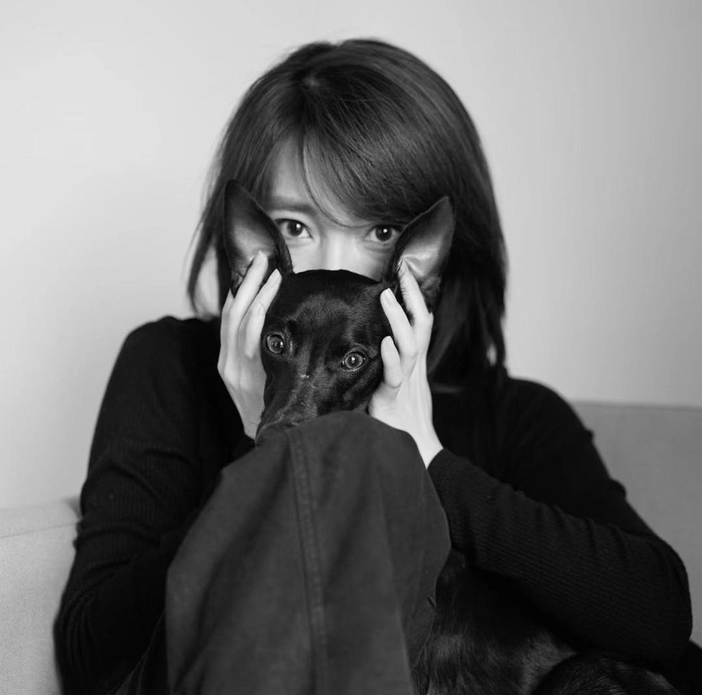

Product Designer / Creative Art Director
10+ years experience
With extensive experience across luxury e-commerce, automotive and technology brands, delivering end-to-end digital products.
Strong expertise in wireframing, prototyping, UAT, data-driven optimisation and new feature development. Proven track record of building scalable design systems and product foundations aligned with brand guidelines and tonality, while collaborating closely with product, engineering and commercial stakeholders to drive measurable business impact.
Previously a Digital Art Director in advertising, leading creative campaigns for BMW, Porsche, MINI, Samsung and HUAWEI. Brings a deep understanding of UI, brand tone and visual storytelling into scalable, conversion-focused product design.
Documentary / Fashion Photographer
Fashion and documentary photographer based in London, with a focus on religious culture, public health, and women and girls' issues. With many years of experience visiting Tibetan regions, documents and explores religious practices, paying particular attention to cultural erosion and the preservation of minority traditions.
Exhibitions
- London Contemporary Art Fair, 5th Edition — London, UK
- London College of Fashion Exhibition, Victoria House — UK
- VENICE CANVAS International Art Fair 2022 — Venice, Italy
- CANVAS International Art Fair 2023 — Venice, Italy
- 19th Julia Margaret Cameron Award Exhibition — Barcelona, Spain
- 17th Arte Laguna Prize Finalist Exhibition — Venice, Italy
Awards
- Art Show International Gallery, 6th Talent Prize Awards
- 8th Luxembourg Art Prize 2022, Finalist
- Athens Photo Festival 2022, Shortlist
- 17th Arte Laguna Prize, Finalist
- Format Photo Festival 2023, Long-list
Press
